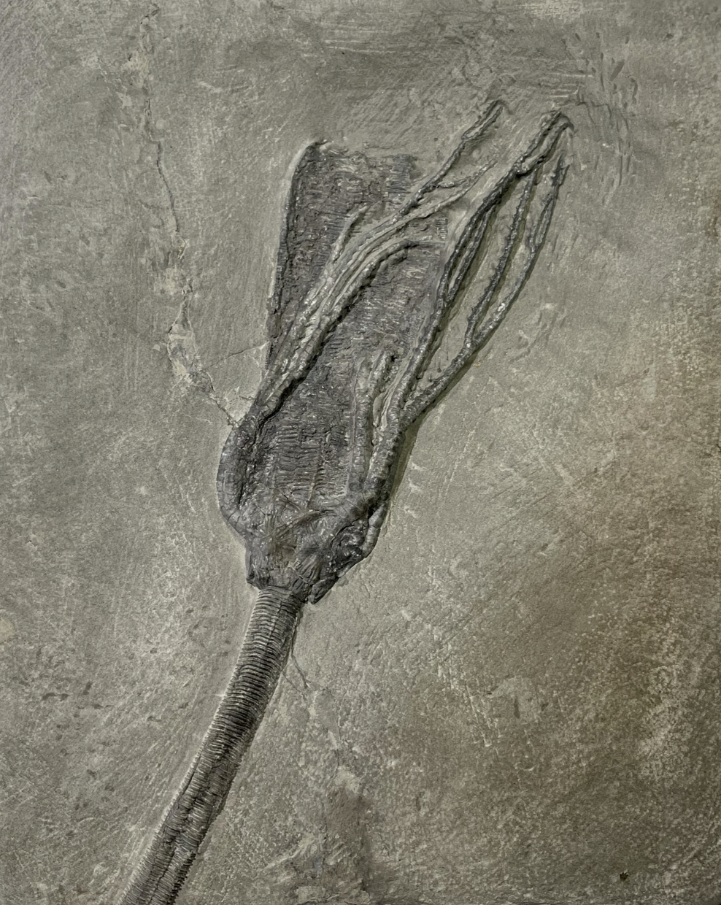
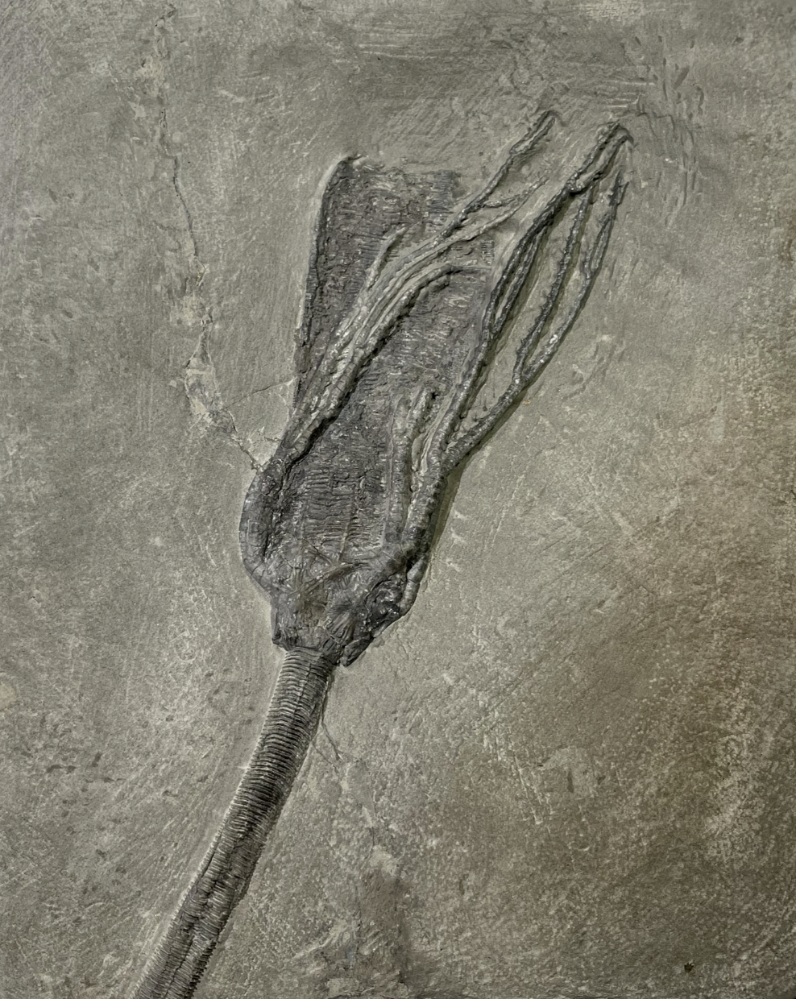

Springericrinus magniventrus
• Mississippian
• Edwardsville Formation
• Crawfordsville, Indiana, USA
Size: 12 cm crown
Here is an impressive, rather obscure and unusual crinoid from a familiar locality. Springericrinus magniventrus is a massive cladid crinoid from Crawfordsville, with the preserved crown on this specimen reaching over 12 cm. Most notable is the enormously large and wide, corrugated anal sac, along with a conical calyx made of strongly-ornamented thin plates, and with relatively thin, rounded, uniserial branched arms. To me these features are reminiscent of Dendrocrinids such as Dendrocrinus and especially Plicodendrocrinus for the "plicate" anal sac, which are much older and typically seen from the Ordovician and Silurian (though the arms on these are non-pinnulate). Without identification and provenance, I would not have guessed this to be a Mississippian crinoid.
 
